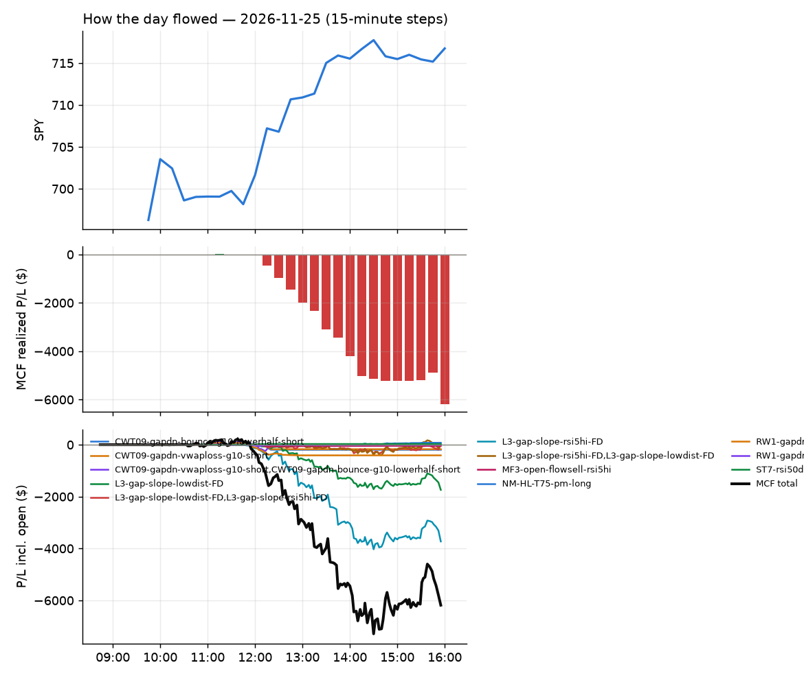
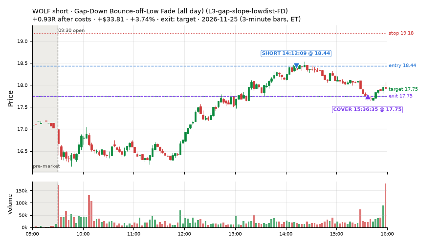
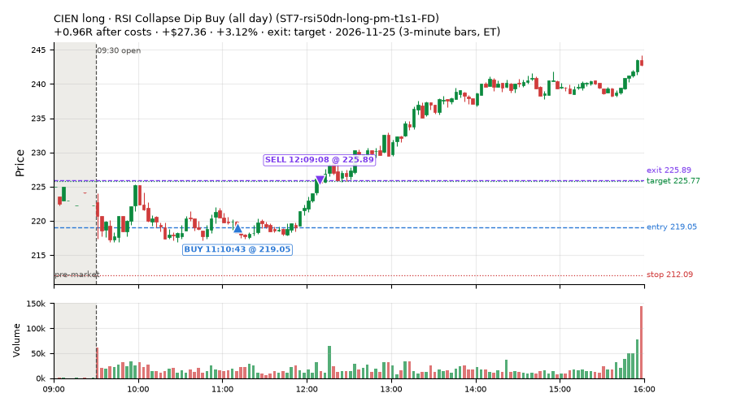
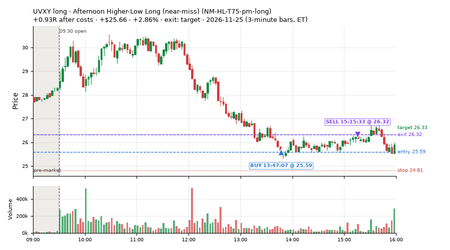
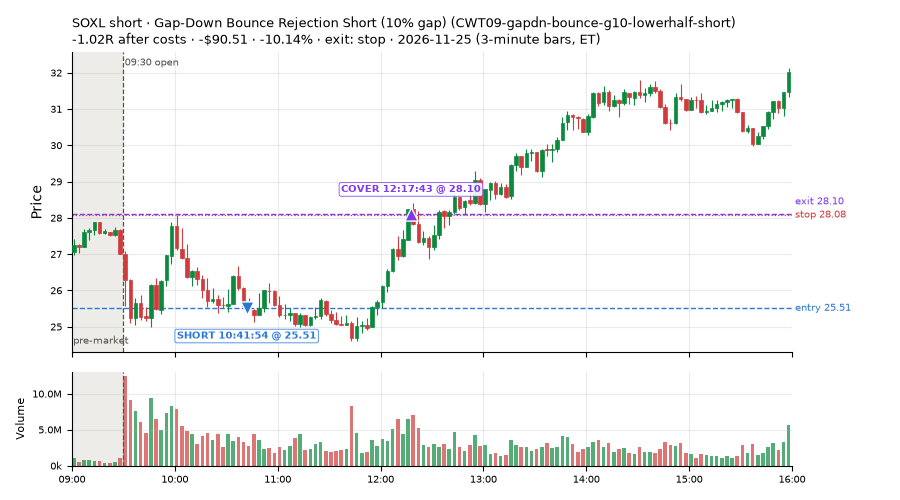
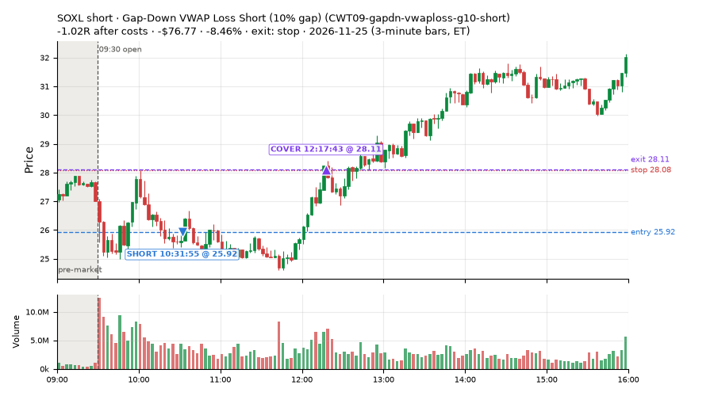
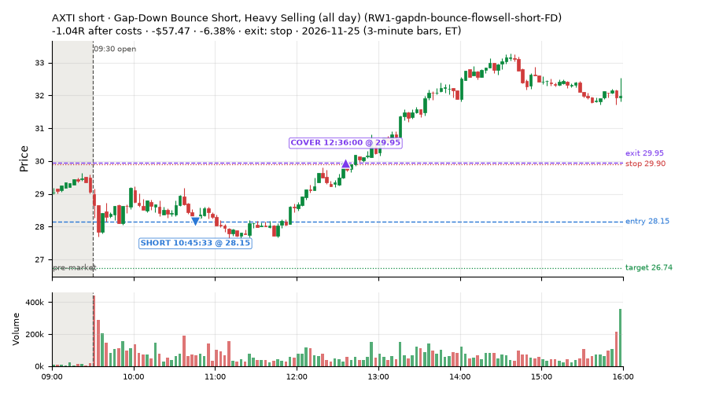
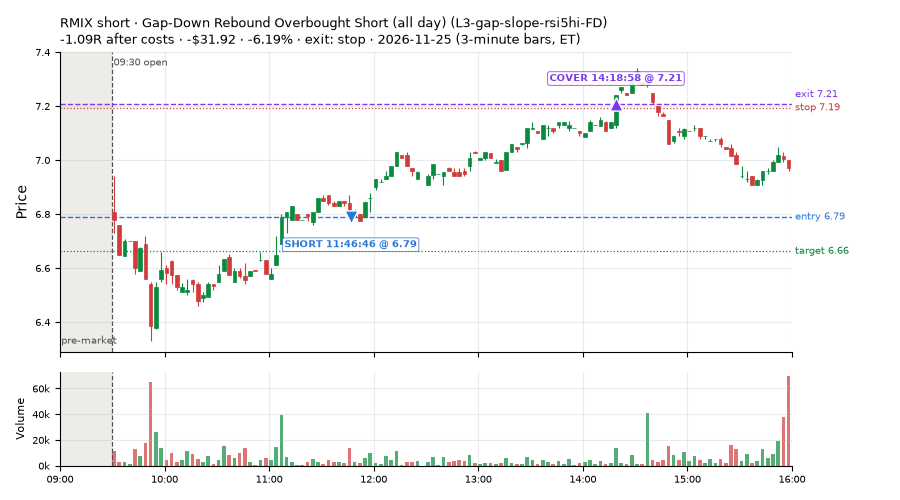
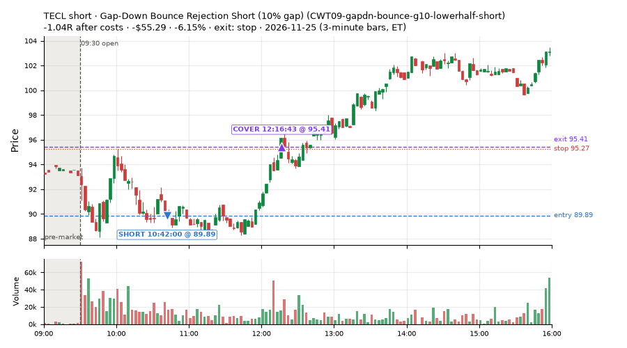

545 trades · win rate 15% · P/L $-6,183.02
PROBATION: no live setup has passed both locked test periods. 10 owner-directed setups added 2026-10-08 (MarcoFlow top 5 + 5 new), untested live. RW6G1 (RW6 + VWAP band guard) added 2026-10-09, probation.

| Symbol | Setup | Side | In | Out | Entry | Exit | Exit reason | % gained | P/L |
|---|---|---|---|---|---|---|---|---|---|
| WOLF | Gap-Down Bounce-off-Low Fade (all day) (L3-gap-slope-lowdist-FD) | short | 14:12 | 15:36 | 18.44 | 17.75 | target | +3.74% | $33.81 |
| CIEN | RSI Collapse Dip Buy (all day) (ST7-rsi50dn-long-pm-t1s1-FD) | long | 11:10 | 12:09 | 219.05 | 225.89 | target | +3.12% | $27.36 |
| UVXY | Afternoon Higher-Low Long (near-miss) (NM-HL-T75-pm-long) | long | 13:47 | 15:15 | 25.59 | 26.32 | target | +2.86% | $25.66 |
| Symbol | Setup | Side | In | Out | Entry | Exit | Exit reason | % lost | P/L |
|---|---|---|---|---|---|---|---|---|---|
| SOXL | CWT09-gapdn-bounce-g10-lowerhalf-short | short | 10:41 | 12:17 | 25.51 | 28.10 | stop | -10.14% | $-90.51 |
| SOXL | CWT09-gapdn-vwaploss-g10-short | short | 10:31 | 12:17 | 25.92 | 28.11 | stop | -8.46% | $-76.77 |
| AXTI | RW1-gapdn-bounce-flowsell-short-FD | short | 10:45 | 12:36 | 28.15 | 29.95 | stop | -6.38% | $-57.47 |
| RMIX | L3-gap-slope-rsi5hi-FD | short | 11:46 | 14:18 | 6.79 | 7.21 | stop | -6.19% | $-31.92 |
| TECL | CWT09-gapdn-bounce-g10-lowerhalf-short | short | 10:42 | 12:16 | 89.89 | 95.41 | stop | -6.15% | $-55.29 |








Signal to fill: median 2s, 90th percentile 4s (545 trades). Bars close each minute; the order follows the bar close.
Best excursion (MFE): median 0.22R; worst (MAE) median 1.01R. 56% of trades never got +0.25R in our favour; 1 reached +1R and still closed at or below 0.
| Symbol | Setup | Best R | Worst R | Closed R |
|---|---|---|---|---|
| GFS | RW1-gapdn-bounce-flowsell-short-FD | +1.22 | -1.04 | -1.17 |
| XBI | RW1-gapdn-bounce-flowsell-short-FD | +0.90 | -1.06 | -1.08 |
| OKLO | RW1-gapdn-bounce-flowsell-short-FD | +0.93 | -1.00 | -1.03 |
| SYRE | RW1-gapdn-bounce-flowsell-short-FD | +0.79 | -1.10 | -1.12 |
| RGLD | L3-gap-slope-rsi5hi-FD | +0.43 | -1.26 | -1.47 |
| Entry time | Trades | Win | Avg R | P/L |
|---|---|---|---|---|
| 09:50-10:30 | 1 | 0% | -1.09 | $-13.42 |
| 10:30-11:30 | 32 | 16% | -0.82 | $-757.91 |
| 11:30-13:00 | 193 | 1% | -1.08 | $-3,575.30 |
| 13:00-14:00 | 205 | 10% | -0.74 | $-1,958.25 |
| 14:00-16:00 | 114 | 48% | -0.02 | $121.86 |
| Setup | Trades | Win | Avg R after costs | Adj R (net of SPY) | Avg R ex-market (all sessions) | P/L |
|---|---|---|---|---|---|---|
| Gap-Down Bounce Rejection Short (10% gap) (CWT09-gapdn-bounce-g10-lowerhalf-short) | 3.0 | 0% | -1.03 | -0.82 | -0.28 (beta -0.55, n 8) | $-194.68 |
| Gap-Down VWAP Loss Short (10% gap) (CWT09-gapdn-vwaploss-g10-short) | 3.0 | 0% | -1.03 | -0.79 | -0.30 (beta -0.40, n 13) | $-172.56 |
| Gap-Down Bounce-off-Low Fade (all day) (L3-gap-slope-lowdist-FD) | 198.0 | 11% | -0.73 | -0.45 | -0.17 (beta -1.29, n 311) | $-1,738.64 |
| Gap-Down Rebound Overbought Short (all day) (L3-gap-slope-rsi5hi-FD) | 311.0 | 17% | -0.70 | -0.48 | -0.19 (beta -1.07, n 457) | $-3,726.64 |
| Early Sellers into a Pop (MF3-open-flowsell-rsi5hi) owner-directed; holdouts once: Sep-Oct -0.059R n170, Apr-Jun -0.034R n729 | 4.0 | 25% | -0.59 | +0.84 | -0.10 (beta -0.41, n 83) | $-43.59 |
| Afternoon Higher-Low Long (near-miss) (NM-HL-T75-pm-long) | 4.0 | 100% | +0.53 | +0.59 | -0.01 (beta +0.56, n 23) | $75.32 |
| Gap-Down Bounce Short, Heavy Selling (all day) (RW1-gapdn-bounce-flowsell-short-FD) | 21.0 | 5% | -1.03 | -0.41 | -0.16 (beta -0.79, n 230) | $-409.59 |
| RSI Collapse Dip Buy (all day) (ST7-rsi50dn-long-pm-t1s1-FD) | 1.0 | 100% | +0.96 | +0.58 | +0.21 (beta +0.78, n 20) | $27.36 |
Market direction (SPY, beta 1) accounted for $-2,120.05 of today's $-6,183.02; the rest ($-4,062.97) came from the setups themselves. Avg R net of SPY: -0.45 (incl. a hedge leg's cost; report only).
13 setups live today. Today: 2867 signals, 545 taken, 1 lost because another setup held the symbol (0%). Since 2026-10-09 (34 sessions): 14552 signals, 5103 taken, 770 lost to other setups (5%). Peak open positions today 252 of 400 slots. Earnings blackout removed 116 symbols before scanning.
Simulated playing time (not live): 9101 what-if trades of signals not taken, avg -0.25R, 42% winners; of them 617 lost to another setup (avg +0.02R).
Silent: IDX1-qqq100-0955-TQQQ-trail, IDX1-qqq100-0955-TQQQ-hold, IDX2-spy075-0945-3x-trail, IDX3-spy075-0955-3x-trail, IDX5-spy050-0945-3x-trail · Crowded out: RW4-ns3-adv150-short-FD, RW4-ns3-adv150-short, NS3-failed-vwap-reclaim-short-FD · Starved: orb20_a, MF1-945-flowsell-vwapup, RW6G1-ns2-up3-vwap2sd-short, LIQ-pdl-sweep-open15-vwap-long, MF5-flowsell-vwapup-rsi5hi, ST5-pdbrkup-short-mid-t05s1-FD, ST3-rsi5up-short-pm-t1s1-FD, exhaustion_short-FD, NS2-sma50break-overbought-short, MF1-945-flowsell-vwapup-FD
| Prio | Setup | Today sig / taken | Sessions | Signals / taken / trades | Taken/day | Expected/day | Lost to other setups | Lost to (setup n) | Top skip reasons | SIMULATED: not-taken n / avg R / win | Verdict |
|---|---|---|---|---|---|---|---|---|---|---|---|
| 1 | Gap-Up Faller Volume Spike Short (all day) ST6-volspikeup-short-mid-t1s1-FD | 0 / 0 | 28 | 80 / 44 / 44 | 1.57 | 1.24 | 4 | RW4-ns3-adv150-short-FD 3, NS3-failed-vwap-reclaim-short 3, NS3-failed-vwap-reclaim-short-FD 1 | split-tape short gate 13, spread / quote / size 13, not shortable / shorts off 6 | 34 / -0.01R / 53% | slow 7.9 entries/week; ~8 weeks to 60 trades |
| 2 | Gap-Down Bounce Rejection Short (10% gap) CWT09-gapdn-bounce-g10-lowerhalf-short | 49 / 3 | 10 | 218 / 8 / 8 | 0.80 | – | 0 | – | not shortable / shorts off 199, spread / quote / size 5, other 4 | 209 / -0.58R / 21% | slow 4.0 entries/week; ~15 weeks to 60 trades |
| 3 | Panic Flush Reversal (5x volume) CWT05-flush-m05-v5-long | 0 / 0 | 10 | 23 / 10 / 10 | 1.00 | – | 1 | CWT09-gapdn-vwaploss-g10-short 1 | spread / quote / size 8, other 4, symbol held by another setup 1 | 13 / +0.24R / 85% | slow 5.0 entries/week; ~12 weeks to 60 trades |
| 4 | Gap-Down VWAP Loss Short (10% gap) CWT09-gapdn-vwaploss-g10-short | 40 / 3 | 10 | 212 / 13 / 13 | 1.30 | – | 0 | – | not shortable / shorts off 192, spread / quote / size 5, price through stop/target 2 | 198 / -0.72R / 14% | slow 6.5 entries/week; ~9 weeks to 60 trades |
| 5 | Early Sellers into a Pop MF3-open-flowsell-rsi5hi | 6 / 4 | 28 | 249 / 83 / 83 | 2.96 | 9.19 | 38 | MF3-open-flowsell-rsi5hi-FD 35, MF5-flowsell-vwapup-rsi5hi 13, MF5-flowsell-vwapup-rsi5hi-FD 7 | spread / quote / size 48, symbol held by another setup 38, split-tape short gate 38 | 166 / -0.13R / 49% | slow 14.8 entries/week; ~4 weeks to 60 trades |
| 6 | Afternoon Higher-Low Long (near-miss) NM-HL-T75-pm-long | 5 / 4 | 10 | 29 / 23 / 23 | 2.30 | – | 0 | – | spread / quote / size 6 | 6 / -0.38R / 17% | slow 11.5 entries/week; ~5 weeks to 60 trades |
| 7 | Big Gainer Dip-and-Pop NS1-rsidip-rsi5pop-long | 0 / 0 | 11 | 20 / 11 / 11 | 1.00 | 0.92 | 0 | – | spread / quote / size 5, price through stop/target 2, other 2 | 9 / +0.32R / 89% | slow 5.0 entries/week; ~12 weeks to 60 trades |
| 8 | Gap-Down Bounce-off-Low Fade (all day) L3-gap-slope-lowdist-FD | 645 / 198 | 33 | 1196 / 311 / 311 | 9.42 | 9.76 | 9 | RW6-ns2-up3-short-FD 3, NS2-sma50break-overbought-short-FD 3, L3-gap-slope-rsi5hi-FD 3 | not shortable / shorts off 325, other 215, spread / quote / size 214 | 875 / -0.38R / 32% | ok 47.1 entries/week |
| 9 | Gap-Down Rebound Overbought Short (all day) L3-gap-slope-rsi5hi-FD | 2088 / 311 | 18 | 2993 / 457 / 457 | 25.39 | 13.41 | 12 | L3-gap-slope-fromopen-FD 8, L3-gap-slope-lowdist-FD 5, RW6G1-ns2-up3-vwap2sd-short-FD 2 | other 1266, not shortable / shorts off 595, spread / quote / size 407 | 2508 / -0.40R / 36% | ok 126.9 entries/week |
| 10 | 20-Minute Opening Range Breakout orb20_a | 3 / 0 | 33 | 120 / 40 / 40 | 1.21 | 6.79 | 0 | – | trigger missed between polls 33, spread / quote / size 20, other 13 | 72 / +0.06R / 51% | starved 1.21 entries/day vs ~6.79 expected |
| 11 | Gap-Down Bounce Short, Heavy Selling (all day) RW1-gapdn-bounce-flowsell-short-FD | 28 / 21 | 17 | 377 / 230 / 230 | 13.53 | 17.10 | 10 | RW3-gapdn-rsi5pop-flowsell-short-FD 5, MF2-open-rsimidhi-flowsell-FD 3, RW5-heat30-flowsell-rsi5pop-gapdn-short-FD 3 | spread / quote / size 72, other 43, not shortable / shorts off 21 | 145 / +0.05R / 55% | ok 67.6 entries/week |
| 12 | Big Loser Flush Buy NS5-sma50-flush-oversold-long | 0 / 0 | 6 | 26 / 20 / 20 | 3.33 | 2.41 | 0 | – | spread / quote / size 5, other 1 | 6 / +0.27R / 67% | ok 16.7 entries/week |
| 13 | RSI Collapse Dip Buy (all day) ST7-rsi50dn-long-pm-t1s1-FD | 3 / 1 | 13 | 27 / 20 / 20 | 1.54 | 2.17 | 1 | orb20_a 1 | other 4, symbol held by another setup 1, daily loss cap 1 | 7 / +0.09R / 57% | slow 7.7 entries/week; ~8 weeks to 60 trades |
Every trade is attached as a CSV you can open and edit in Excel or Google Sheets. Live page: https://misiti15.github.io/MCF/live/